Полиране и защита на фарове и стопове
Възстановяваме прозрачността на пожълтели и надраскани фарове чрез професионално машинно полиране, след което поставяме UV защитно фолио срещу повторно помътняване и надраскване.
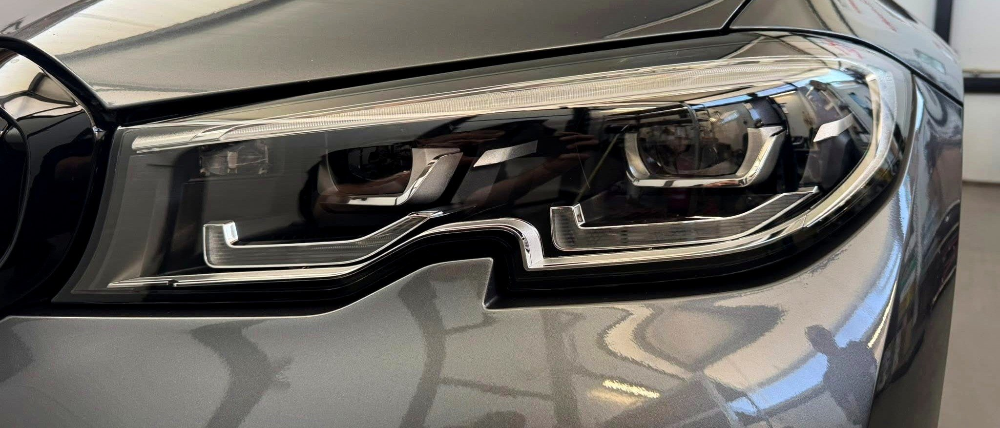
Рециклиране, ремонт и възстановяване на автомобилни фарове — с внимание към всеки детайл, за по-добра видимост, безопасност и перфектен външен вид. Работим с всички марки и модели.
През годините изградихме репутация на коректен партньор, който работи с внимание към всеки детайл. За нас качеството не е компромис, а стандарт.
Разполагаме със специализирана техника и богат практически опит при работа с фарове на автомобили от всички марки и модели. Нашият стремеж е всеки клиент да получи надеждно решение, дълготраен резултат и професионално обслужване.
Видимостта на пътя е ключова за безопасното шофиране. С времето фаровете губят своята прозрачност, рефлекторите отслабват, а светлината става все по-слаба. Ние предлагаме професионални решения за възстановяване, използвайки качествени материали, специализирано оборудване и доказани технологии — без необходимост от скъпа подмяна.
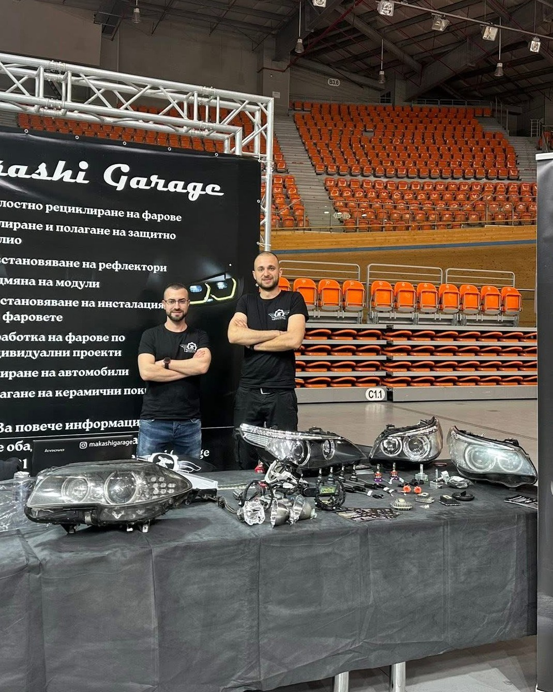
От машинно полиране до цялостно рециклиране и електрически ремонт — всяка услуга е с ясна цел: по-добра светлина, по-дълъг живот на фара, по-ниска цена от подмяна.
Възстановяваме прозрачността на пожълтели и надраскани фарове чрез професионално машинно полиране, след което поставяме UV защитно фолио срещу повторно помътняване и надраскване.
Износените или прегорели рефлектори значително намаляват силата на светлината. Възстановяваме тяхната ефективност и подобряваме осветеността на пътя.
Пълно разглобяване, почистване, ремонт и възстановяване на фара. Подменяме повредени компоненти, връщаме външния вид и функционалността му.
Персонализиране на фарове според предпочитанията на клиента — декоративни елементи, LED решения, цветови акценти и други модификации.
Подменяме повредени или остарели светлинни модули с нови, качествени компоненти за по-силна, по-равномерна и надеждна светлина.
Диагностика и ремонт на повреди в електрическите инсталации на фаровете — прекъснати кабели, дефектирали букси, проблеми с управлението.
Премахване на фини драскотини, оксидация и следи от употреба по автомобилната боя. Възстановяваме блясъка и свежия вид на автомобила.
Полагаме висококачествени керамични покрития, които предпазват боята от UV лъчи, замърсявания и химически въздействия.
Плъзнете плъзгача върху всяка снимка, за да сравните състоянието на фара преди и след работата ни.
Машинно полиране за премахване на драскотини и оксидация, финиширано с керамично покритие за дълготрайна защита и дълбок блясък.
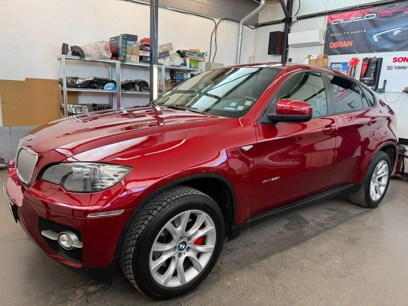
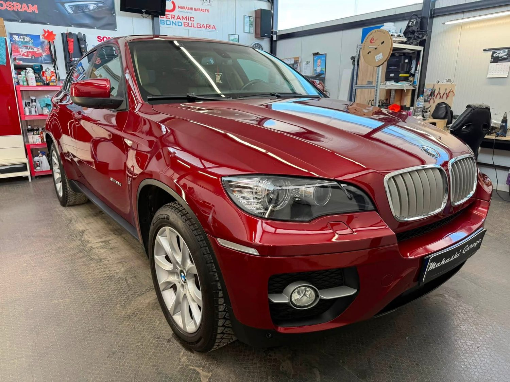
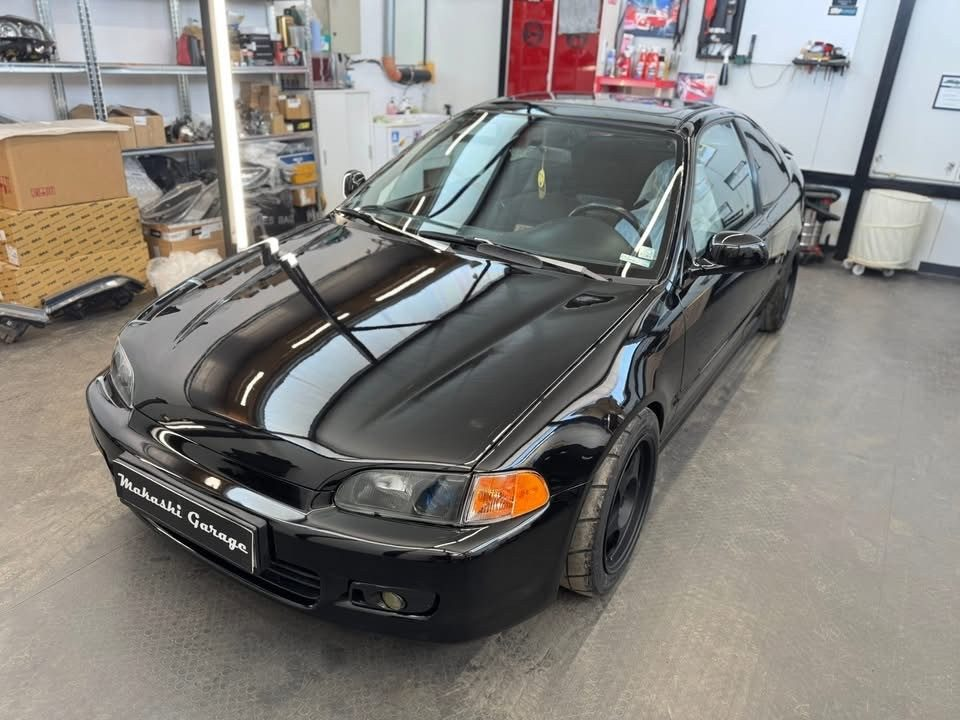
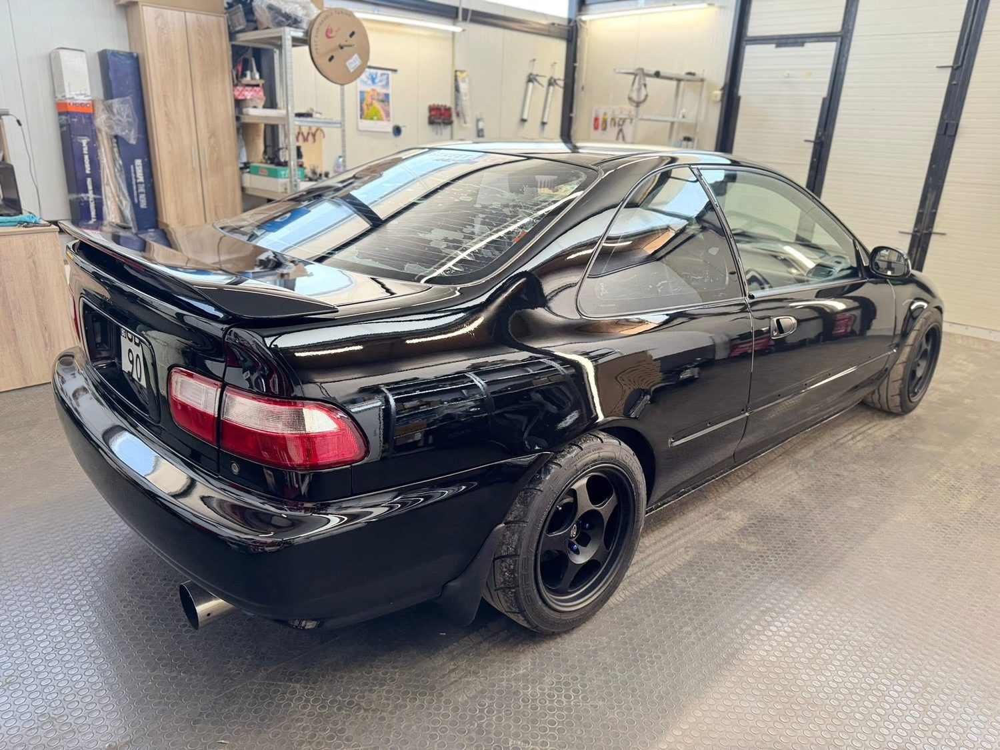
Всеки фар се разглобява внимателно до последната част — рефлектор, лещи, електроника — за да сме сигурни, че резултатът е дълготраен, а не козметичен.
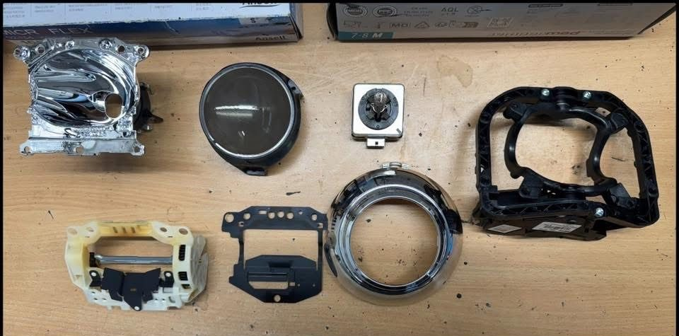
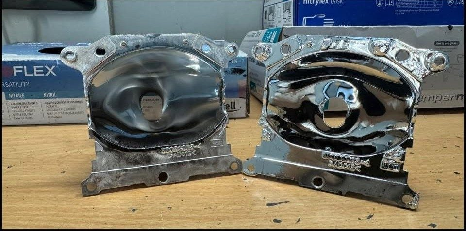
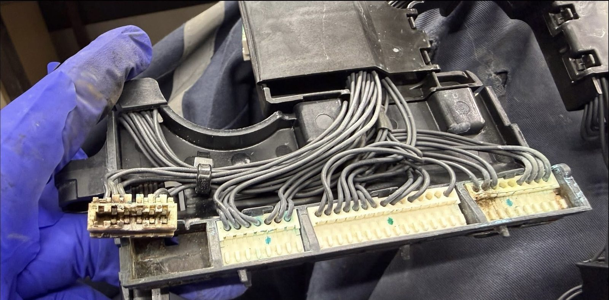
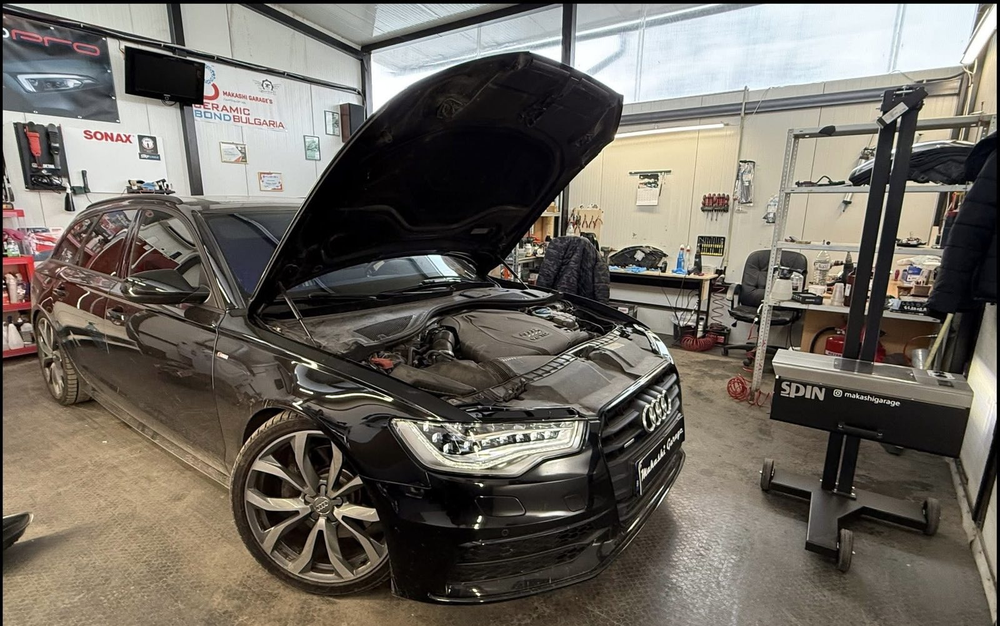
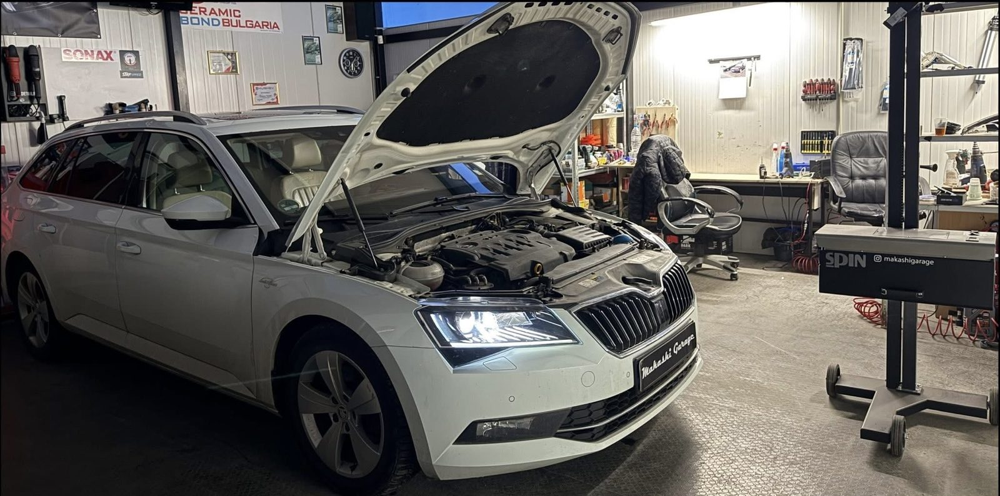
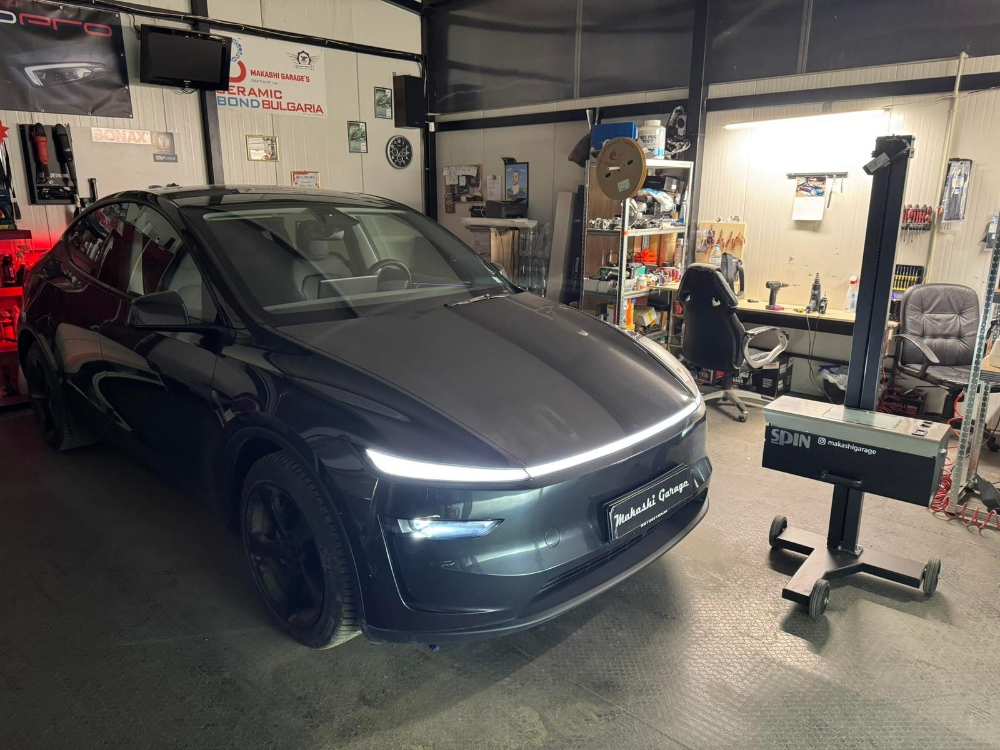
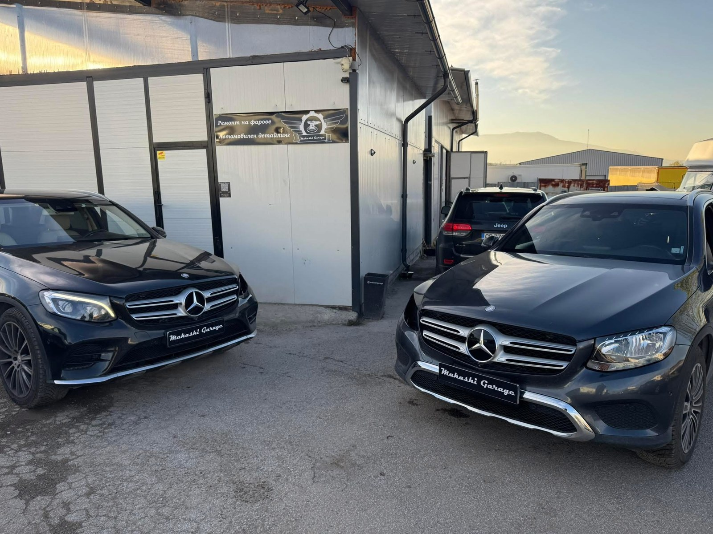
Реални отзиви от Google Profile
За да останат актуални и проверими, не показваме преписани отзиви тук — вижте ги директно в Google, където можете и сами да оставите своя.
Виж отзивите в Google MapsПоследни обекти, преди/след кадри и новини директно от страницата ни.
Кратко видео от работния процес в Makashi Garage.
Видеото се добавя от екипа на сервиза — междувременно можете да разгледате повече кадри в Instagram профила ни @makashigarage.
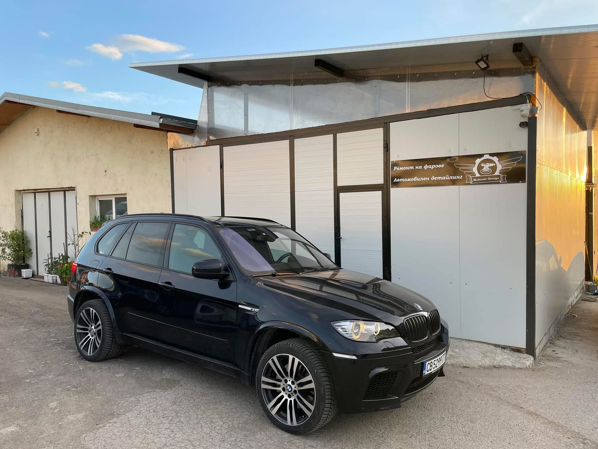
Опишете проблема (пожълтял фар, счупен рефлектор, влага, изгорял LED модул) — ще се свържем с вас с най-подходящото решение.